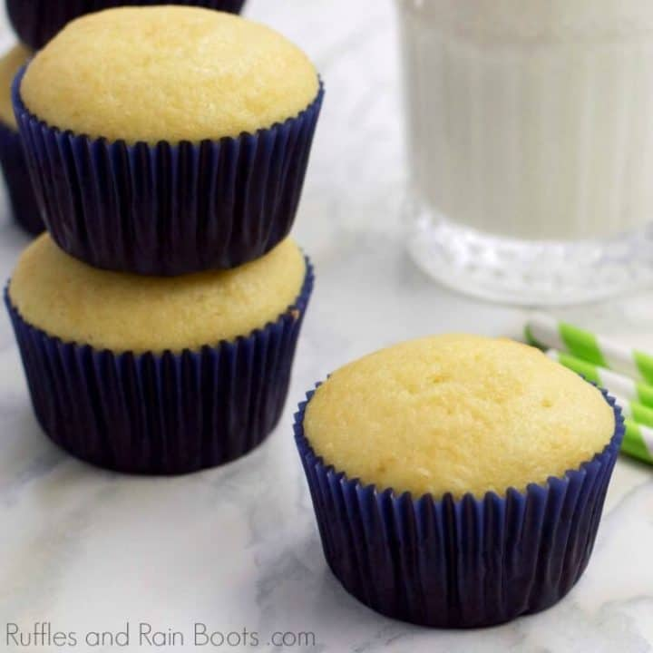

Cupcakes

Basic Cupcakes recipe:
Make a batch of 24 cupcakes in just 40 minutes with this basic recipe. Ideal for bake sales, school fetes, kids' parties, and more.
Ingredients:
- 2 1/2 cups (325g) all purpose flour
- 2 cups (414g) sugar
- 3 tsp baking powder
- 1 tsp salt
- 1 cup (240ml) milk
- 1/2 cup (120ml) vegetable oil
- 1 tbsp vanilla extract
- 2 large eggs
- 1 cup (240ml) water
Preparing and Baking:
- Preheat the oven to 190C, 375F, gas 5. Line two muffin trays with 12 cupcake cases or bake in batches of 12 using one muffin tray.
- Start by creaming butter and sugar(opens in new tab) together in a bowl using a wooden spoon or electric whisk. Beat until soft and fluffy. Then add the flour, eggs, milk, and salt and whisk until the mixture is smooth.
- Use a traditional-style ice-cream scoop, or spoon, to divide the mixture between all the paper cases making sure to get an even amount of mixture in each.
- Place both muffin tins in the oven and bake for 15 minutes, then swap over the position of the tins over and bake for a further 3-7 minutes, until both trays of cupcakes are a light golden colour.
- Remove the tins from the oven. Leave the cupcakes to cool in the tins for a few minutes. Then transfer them to a wire rack to cool. Once completely cooled, the cupcakes can be decorated.